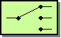
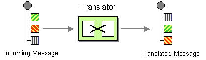

Enterprise
Integration
Patterns
Padrões de Integração em Aplicações Corporativas
Título:Enterprise Integration Patterns: Designing, Building, and Deploying Messaging Solutions.
Autores:
Gregor Hohpe; Bobby Woolf
Publicado em Outubro, 2003
Descreve 65 padrões de integração com o objetivo de desenhar soluções integrações de qualidade.

“Designar à uma equipe de programadores para criar uma solução de improviso personalizada amarrará você em uma cadeia interminável de surpresas, ajustes e correções trazendo riscos à lucratividade do seu negócio.”
Porquê criar Padrões de Integração de Sistemas?
- Necessidade de interoperabilidade entre sistemas;
- A criticidade e os riscos são altos;
- Integrações mal desenhadas causam problemas ao longo dos anos;
- Solução errada => Manutenção complexa;
- Os padrões de integração são soluções provadas para problemas no contexto de integração;
Evolução da Integração
Soluções de integração utilizadas ao longo da história da computação.
Anos 70: Cobol Flat Files
- Troca de arquivos através de ferramentas de processamento batch.
Prós:
- Desacoplamento físico;
- Independência de linguagem ou sistema;
Contras:
- Transferência offline;
- Fora de sincronia;
- Volume grande dados;
Anos 80: Banco de dados Central
- Todas as aplicações acessam uma base de dados comum.
Prós:
- Consistência de dados;
- Garantia de transacionalidade;
Contras:
- Integração apenas de dados;
- Dificuldade em encontrar uma representação comum para todos os sistemas;
Anos 90: Remote Procedure Calls (RPC)
- Uma aplicação executa métodos diretamente noutra aplicação.
Prós:
- Troca de dados realtime;
- Integração de serviços de negócio;
Contras:
- Funciona bem apenas com número reduzido de sistemas;
- Alto acoplamento;
- Performance;
Atualmente: Mensagens Assíncronas
- Uma aplicação envia mensagens para serem processadas assincronamente.
- Aplicações separadas por um canal (desacoplamento físico);
- Canais assíncronos (desacoplamento temporal);
- Troca de dados através de mensagens;
- Tolerância a falhas de rede;
- Alta disponibilidade;
Estilos de Integração
Conceitos básicos
Channels:
Como transportar mensagens ?Messages:
Como descrever (ou criar) mensagens?Pipe and Filters:
Pipeline de execução das mensagens antes de serem entregues ao destinatários?Routing:
Como rotear mensagens para o destinatário?Transformation:
Como transformar uma mensagem num formato exigido?Endpoints:
Como uma aplicação deve-se conectar com um canal para enviar ou receber mensagens?Padrões
Fundamentais
Channels
Padrão que detalha os canais onde a mensagem é recebida (in) ou enviada (out).
Ponto a Ponto
Um canal ponto a ponto garante que apenas um consumidor recebe uma mensagem.
Publish-Subscribe

Um canal de entrada que se divide em vários canais de saída, um para cada assinante.
Dead Letter Channel

Quando um sistema determina que ele não pode ou não deve entregar uma mensagem, ele pode optar por mover a mensagem para um Dead Letter Channel.
Pipe and Filters

Consiste em dividir uma tarefa grande em várias tarefas menores conectadas por canais.
from("direct:a")
.bean("decrypt")
.bean("authenticate")
.bean("dedup")
.to("mock:result");Message Router 
Roteador redireciona uma mensagem para outro canal tendo como base um conjunto de condições definidas.
from("jms:inQueue")
.choice()
.when(header("foo").isEqualTo("bar"))
.to("jms:outQueue1")
.otherwise()
.to("jms:outQueue2");Recipient List

Rotea uma mensagem para uma lista (estática ou dinâmica) de destinatários.
Split

Quebra uma mensagem com múltiplos sub-elementos, e processa-os individualmente.
Aggregator

Reune um conjunto de mensagens relacionadas numa única mensagem.
Message Filter
Filtra mensagens pelo seu conteúdo.
Transformation 

Transforma uma mensagem para outro formato.
from("direct:start").process(new Processor() {
public void process(Exchange exchange) {
Message in = exchange.getIn();
in.setBody(in.getBody(String.class).toUpperCase());
}
}).to("mock:result");
Content Enricher

Como posso acessar outro sistema para obter dados necessários e "enriquecer" uma mensagem?
Content Filter
Simplificar uma mensagem removendo itens desnecessários.
Normalizer

Como processar mensagens que são semanticamente equivalentes, mas chegam com formatos diferentes ?
Endpoints 

Define como uma aplicação se conecta com um sistema externo (sem criar acoplamento) para enviar ou receber mensagens.
Adapters
- JDBC
- FTP
- HTTP
- WEB SERVICE
- XMPP
- ...
Catálogo de Padrões
Não usou os padrões.